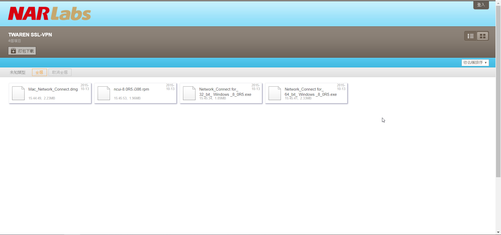
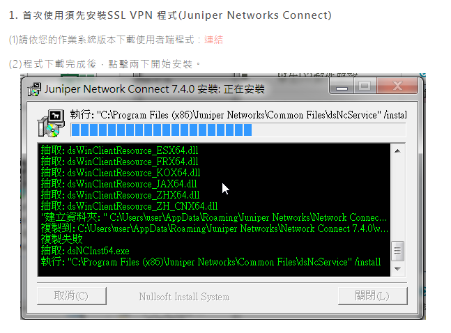
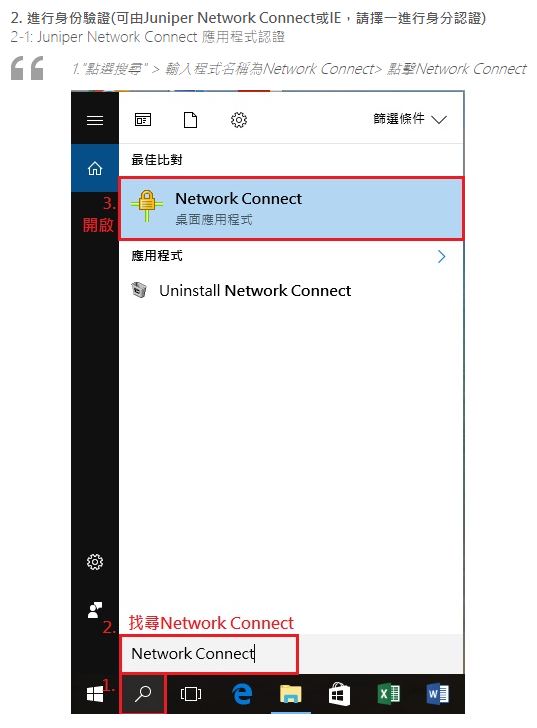
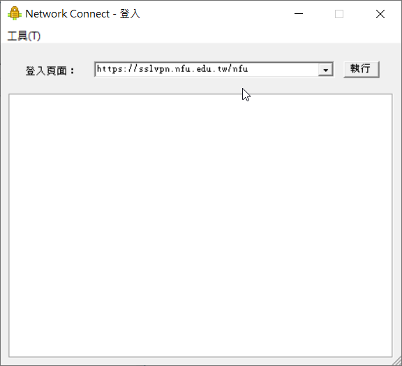
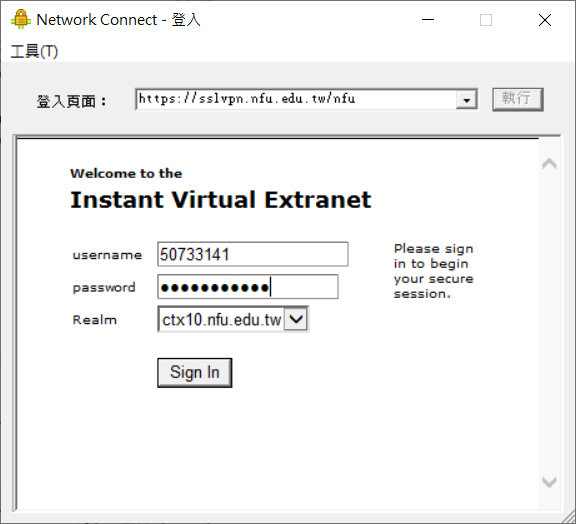
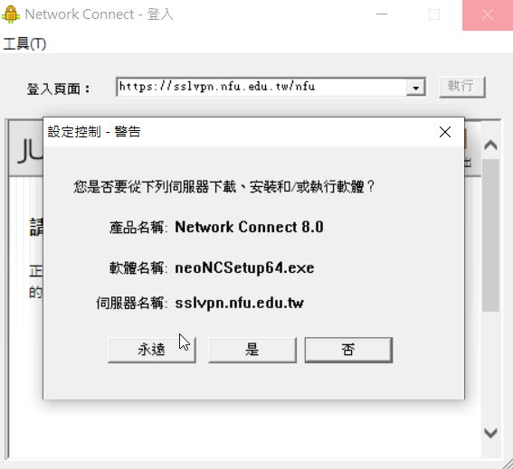
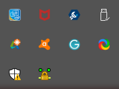

VirtualBox << Previous Next >> w5、w13檔案比較
VirtualBox << Previous Next >> w5、w13檔案比較
TWAREN SSL-VPN連線教學
選取與自己系統相容的檔案並下載。

下載下來後執行並安裝

在搜尋中輸入Network Connect並開啟

輸入網址:https://sslvpn.nfu.edu.tw/nfu

輸入學號及校務行政密碼後登入

點選是

第三排第二個顯示已連線表示已成功連線。

2-2: IE網認證
1.請在IE瀏覽器上按下右鍵 使用"以系統管理員身分執行"2.點選「開始」3.點選「是」，SSL VPN程式安裝完畢後，就會開始跟你的電腦建立連線，請稍後一段時間。


5. VPN連線建立完成
連線建立完成後，在電腦的工作列上(桌面右下角)，會出現 Juniper Network Connect VPN Client的圖示，表示VPN連線已經成功的建立在你的電腦上了。點擊圖示兩下，即可查看連線資訊。(註:指派IP:一定為120.113.100.XX)。
到此，您的SSL-VPN連線已經成功的建立，不管是在家裡還是出差，您的電腦就像在學校使用一般，您可以自由的使用虎尾科技大學自己擁有的網路資源。

6. 連線IP檢視(*)
如何得知連線的 IP 究竟是什麼呢？您可透過網際網路上提供 IP 位址偵測服務的網站進行確認，例如 http://showip.net/

VirtualBox << Previous Next >> w5、w13檔案比較